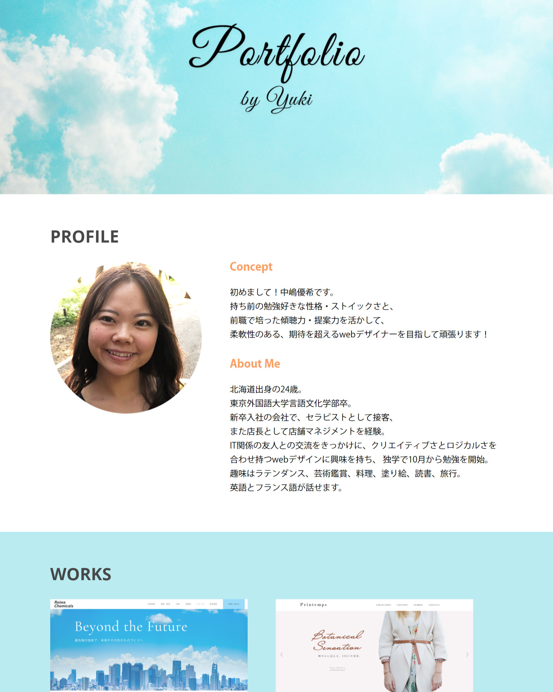

PROFILE

-
- Concept
- 初めまして！中嶋優希です。
持ち前の勉強好きな性格・ストイックさと、
前職で培った傾聴力・提案力を活かして、
柔軟性のある、期待を超えるwebデザイナーを目指して頑張ります！
-
- About Me
- 北海道出身の24歳。
東京外国語大学言語文化学部卒。
新卒入社の会社で、セラピストとして接客、
また店長として店舗マネジメントを経験。
ITへの感動体験をきっかけに、クリエイティブさとロジカルさを
合わせ持つwebデザインに興味を持ち、 独学で10月から勉強を開始。
趣味はラテンダンス、芸術鑑賞、料理、塗り絵、読書、旅行。
英語とフランス語が話せます。
WORKS

令和化学株式会社（架空サイト） ファーストビュー

Printems（架空サイト） ファーストビュー

桜茶房（架空サイト） ファーストビュー

ひまわり幼稚園（架空サイト） ファーストビュー
FEATURE

サイト名:
YUKI's Portofolio
担当：
Design / Coding
コメント：
”ヘルシー、ナチュラル、アクティヴ”といった自分自身のイメージを表現するために、白を基調にしながら、ヒーロー画像には空の画像を挿入し、全体の配色には、空や海を連想させる明るい水色と、太陽を連想させるオレンジをアクセントにちりばめました。
また、字体も全体的に柔らかな印象のものでまとめながら、ヒーロー画像に筆記体を使用してコントラストを演出しました。
また、画像やアイコンの形を円で統一することで、コントラストを出すとともに、堅苦しくない印象に仕上げました。
SKILLS
Photoshop
webページのデザインの作成、画像編集、色調の補正が可能です。
Illustrator
ワイヤーフレームの作成、簡単な図形の作成が可能です。
Xd
勉強中ですが、基本的な操作は習得しています。
HTML/CSS
レスポンシブを含めた、基本的なコーディングが可能です。
jQuery
勉強中ですが、基本的なコードについては理解できます。
CONTACT
お問い合わせはメールまたはDMにてご連絡ください。